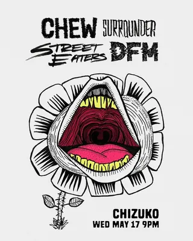
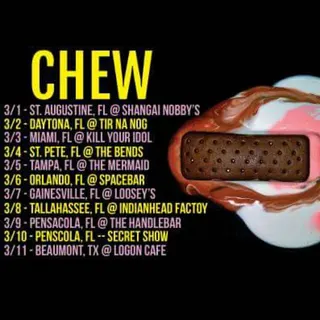
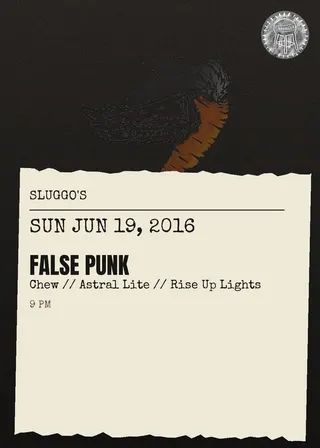

Chew
on tourtouring / out-of-town band
3 shows on the diypensacola record since 2016
on the record since June 2016, first seen at sluggo's on a bill with false punk and astral lite. last seen May 2017 at chizuko; the record's been quiet since.
- first playedJun 19, 2016 · sluggo's
- most played atchizuko ×2 shows
- busiest year2017 · 2 shows
- biggest lineup4 acts · May 2017
flyer wall

May 17, 2017 · chizuko
Mar 10, 2017 · chizuko
Jun 19, 2016 · sluggo'spast shows
- 2017
- 17May 2017Chew, Surrounder, Street Eaters, Dicks From Marschizuko
- 10Mar 2017Chew, Ami Shor, Astral Lite, Glarechizuko
- 2016
- 19Jun 2016False Punk, Chew, Astral Lite, Rise Up Lightssluggo's
shared bills with
act pages are built automatically from the show archive, so something may be off: a misspelled name, a missing link, the wrong type, or a bad local/touring call. no disrespect meant. wrong on any of that, or want a listen link (youtube or bandcamp) or live footage added? send it in.